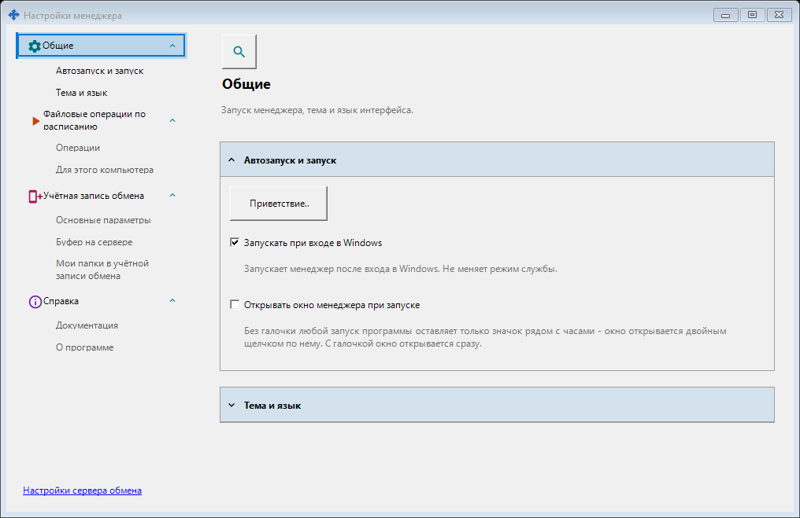
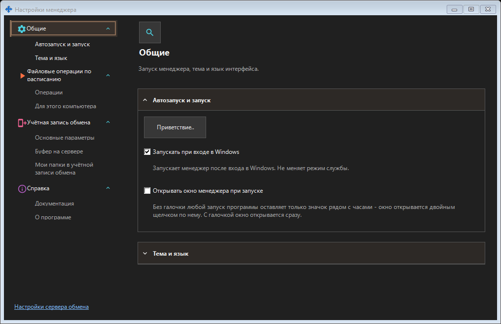
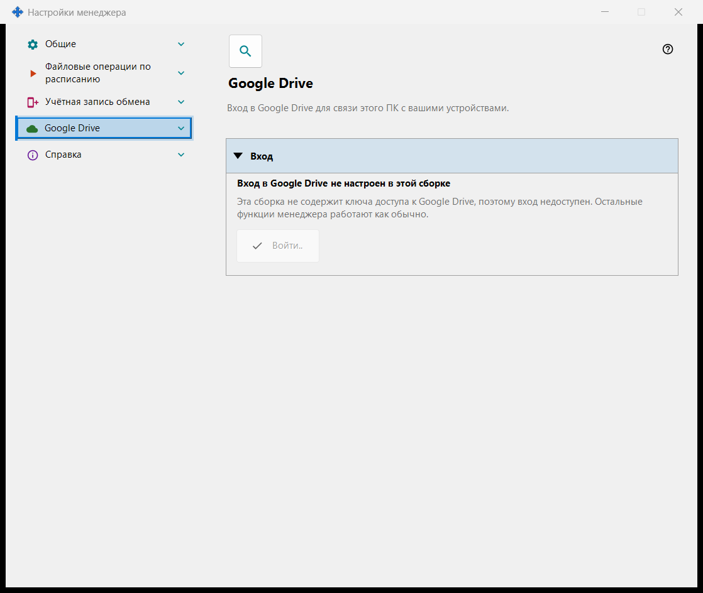
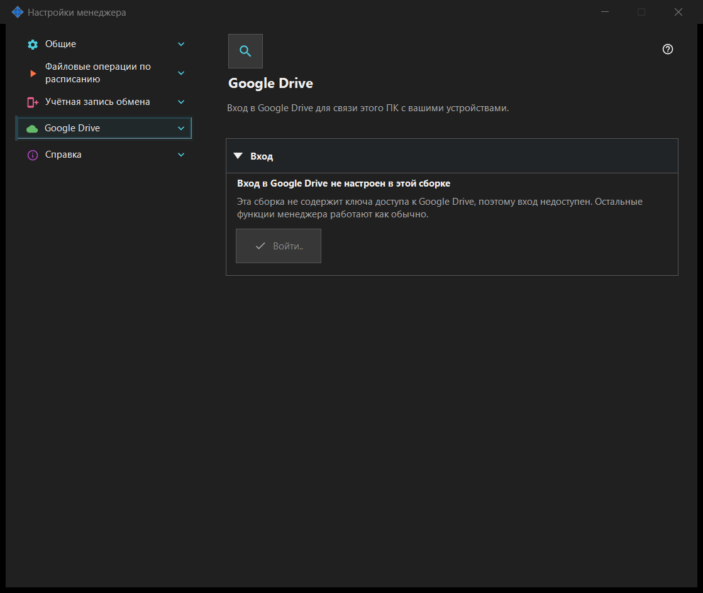

Настройки менеджера
Настройки менеджера
Назначение
Здесь настраиваются запуск менеджера, тема и язык. Подключение этого ПК к удалённому серверу обмена, публикация ресурсов, буфер и операции по расписанию принадлежат менеджеру и не требуют установки локального сервера обмена или включения SFTP. Если установлен компонент общего доступа SFTP, его страницы входят в это окно отдельной группой.


Порядок действий
Откройте настройки менеджера из его окна или трея. Выберите страницу, раскройте группу или воспользуйтесь поиском. Ссылка открывает настройки локального сервера обмена рядом с этим окном. Закрытие одного окна сохраняет другое окно, расписания и работающие серверы.
Элементы окна
Настройки менеджера
Здесь настраиваются запуск менеджера, тема и язык. Подключение этого ПК к удалённому серверу обмена, публикация ресурсов, буфер и операции по расписанию принадлежат менеджеру и не требуют установки локального сервера обмена или включения SFTP. Если установлен компонент общего доступа SFTP, его страницы входят в это окно отдельной группой. Откройте настройки менеджера из его окна или трея. Выберите страницу, раскройте группу или воспользуйтесь поиском. Ссылка открывает настройки локального сервера обмена рядом с этим окном. Закрытие одного окна сохраняет другое окно, расписания и работающие серверы.
Настройки менеджера
Здесь настраиваются запуск менеджера, тема и язык. Подключение этого ПК к удалённому серверу обмена, публикация ресурсов, буфер и операции по расписанию принадлежат менеджеру и не требуют установки локального сервера обмена или включения SFTP. Если установлен компонент общего доступа SFTP, его страницы входят в это окно отдельной группой. Откройте настройки менеджера из его окна или трея. Выберите страницу, раскройте группу или воспользуйтесь поиском. Ссылка открывает настройки локального сервера обмена рядом с этим окном. Закрытие одного окна сохраняет другое окно, расписания и работающие серверы.
Google Drive
- Откройте Share Manager, откройте «Настройки менеджера» и выберите страницу «Google Drive». Нужны аккаунт Google и подключение к интернету. Приложение Google Drive для Windows не нужно, и создавать самому проект, ключ или настройку Google не требуется.
- Нажмите «Войти..». Браузер по умолчанию откроет страницу Google: выберите аккаунт, войдите в него и подтвердите показанный доступ. Пароль вводится только на странице Google и никогда - в этом приложении. Там же можно отменить вход или отказать в доступе; тогда ничего не сохраняется.
- Вернитесь в Share Manager: жирная строка показывает «Вход в Google Drive выполнен», и вкладку браузера можно закрыть. Если браузер не открылся, проверьте браузер по умолчанию и снова нажмите «Войти..». Если браузер показал ошибку или страница так и показывает «Ожидание входа в браузере..», нажмите «Отмена» и войдите снова. Вход сохраняется на этом ПК: после закрытия Share Manager, выхода из Windows или перезагрузки он используется снова без браузера, пока Google считает доступ действующим.
- Чтобы обмениваться с другим устройством, войдите и там, тем же аккаунтом Google, на странице Google Drive этого устройства: на другом ПК - в его Share Manager, на телефоне - в приложении для Android. Устройства, вошедшие в разные аккаунты Google, друг друга не видят, и на обоих нужна версия приложения со страницей Google Drive. Сам вход ничего не передаёт: что идёт через Google Drive, описано в справке буфера обмена, операций по расписанию и группы «Очередь на Google Drive».
- Приложение запрашивает доступ только к своей скрытой папке на вашем Google Drive (область drive.appdata). Другие ваши файлы на Google Drive оно не видит, не просматривает и не синхронизирует, а адреса электронной почты и данных профиля не получает. То, что ваши устройства передают друг другу, занимает место на вашем Google Drive; группа «Очередь на Google Drive» показывает это и позволяет удалить пакет. «Выйти на этом устройстве» удаляет записи этого ПК из скрытой папки, отзывает доступ в Google и удаляет вход, сохранённый на этом ПК. После этого Google может прекратить доступ и на других ваших устройствах с тем же аккаунтом; если какое-то из них сообщит, что вход больше не действует, войдите там снова. Чтобы снова подключить этот ПК, нажмите «Войти..».
- Если что-то пошло не так, строка под состоянием говорит, что случилось. Нет связи или ошибка Google: приложение повторяет попытку само, ничего делать не нужно. Вход отменён или в доступе отказано: нажмите «Войти..» снова, когда захотите. Аккаунт принадлежит организации, администратор которой запрещает приложение: войдите другим аккаунтом Google или обратитесь к администратору. Сообщение, что вход больше не действует: доступ отозван или истёк, нажмите «Войти..» снова. На вашем Google Drive нет свободного места: освободите место или удалите пакеты из очереди. Суточный лимит загрузки: дождитесь следующего дня. «Вход в Google Drive не настроен в этой сборке» или сообщение, что ключ входа этой установки больше не принимается: установите текущую версию приложения с официального сайта; остальные функции Share Manager тем временем работают.
Здесь этот ПК входит в ваш собственный аккаунт Google, чтобы приложение могло пользоваться своей скрытой папкой на вашем Google Drive. Нажмите «Войти..»: откроется браузер по умолчанию, вы подтверждаете доступ в Google, и Google возвращает ответ на этот ПК по локальному адресу; после этого вкладку браузера можно закрыть. Запрашивается единственное разрешение - доступ к собственной скрытой папке приложения на вашем Google Drive (область drive.appdata): приложение не видит других файлов на вашем Google Drive и не получает ни адрес электронной почты, ни данные профиля. Если Google предоставляет не тот доступ, который запрошен, вход отклоняется. Жирная строка показывает состояние. «Вход в Google Drive не выполнен»: доступна кнопка «Войти..»; если доступ отозван или истёк, строка ниже сообщает об этом и предлагает войти снова. «Ожидание входа в браузере..»: завершите вход в браузере или нажмите «Отмена». «Вход в Google Drive выполнен»: этот ПК связан с вашим Google Drive, показаны его имя и краткий идентификатор. «Google Drive сейчас недоступен»: строка ниже называет причину - нет связи, достигнут суточный лимит загрузки, на вашем Google Drive нет свободного места или Google вернул ошибку; при отсутствии связи и при ошибке приложение повторяет попытку само. «Выход из Google Drive..» показывается, пока идёт выход. «Выйти на этом устройстве» задаёт один вопрос, ответ по умолчанию - «Нет». После «Да» доступ отзывается в Google, записи этого ПК удаляются из скрытой папки на вашем Google Drive, а токен входа, сохранённый на этом ПК, удаляется; строка под кнопками сообщает, сколько записей удалено, или что Google не подтвердил отзыв доступа - его тогда можно отозвать в настройках аккаунта Google. В сборке без ключа доступа Google страница показывает «Вход в Google Drive не настроен в этой сборке», кнопка «Войти..» недоступна, остальные функции менеджера работают как обычно. Пока этот ПК подключён, команды буфера обмена в Share Manager работают и через Google Drive, операция по расписанию может использовать «Через Google Drive» как источник или назначение, а список ресурсов просмотрщика показывает папки, которые там публикуют ваши остальные устройства. Группа «Очередь на Google Drive» показывает, что ваши устройства передают друг другу и сколько места это занимает; выберите пакет и нажмите «Удалить пакет», чтобы убрать его с вашего Google Drive. Через Google Drive файлы и буфер хранятся в вашем собственном аккаунте Google, как и другие ваши файлы на Google Drive; сервер обмена в этом не участвует.


Настройки менеджера
Здесь настраиваются запуск менеджера, тема и язык. Подключение этого ПК к удалённому серверу обмена, публикация ресурсов, буфер и операции по расписанию принадлежат менеджеру и не требуют установки локального сервера обмена или включения SFTP. Если установлен компонент общего доступа SFTP, его страницы входят в это окно отдельной группой. Откройте настройки менеджера из его окна или трея. Выберите страницу, раскройте группу или воспользуйтесь поиском. Ссылка открывает настройки локального сервера обмена рядом с этим окном. Закрытие одного окна сохраняет другое окно, расписания и работающие серверы.
Настройки менеджера
На странице «Справка», в группе «О программе», выберите «Экспорт журналов для анализа». Собираются все сохранённые локальные журналы Media Exchange Server и SFTP, установки и вспомогательных программ, менеджера и просмотрщика, даже при остановленных серверах. Журналы удалённых учётных записей не загружаются. Секреты удаляются; недоступные, пропущенные и сокращённые журналы перечислены в проверке и делают архив неполным. «Отправить автору» открывает почтовую программу с проверенным ZIP; отправляете письмо вы. При ошибке вложения добавьте ZIP вручную. «Показать в Проводнике» выделяет ZIP: скопируйте его, откройте нужную папку и вставьте. Если Проводник или почта не открывается, выделите и скопируйте путь в окне проверки. После показа или запроса почты архив сохраняется, в том числе при отмене письма. Отмена до этих действий удаляет его. Следующий экспорт удаляет незанятые архивы старше семи дней; для долгого хранения скопируйте ZIP в другую папку. Архивы больше 20 МиБ доступны через Проводник, передача почте отключена.
Настройки менеджера · Настройки общего доступа SFTP · Настройки сервера обмена